Breakfast
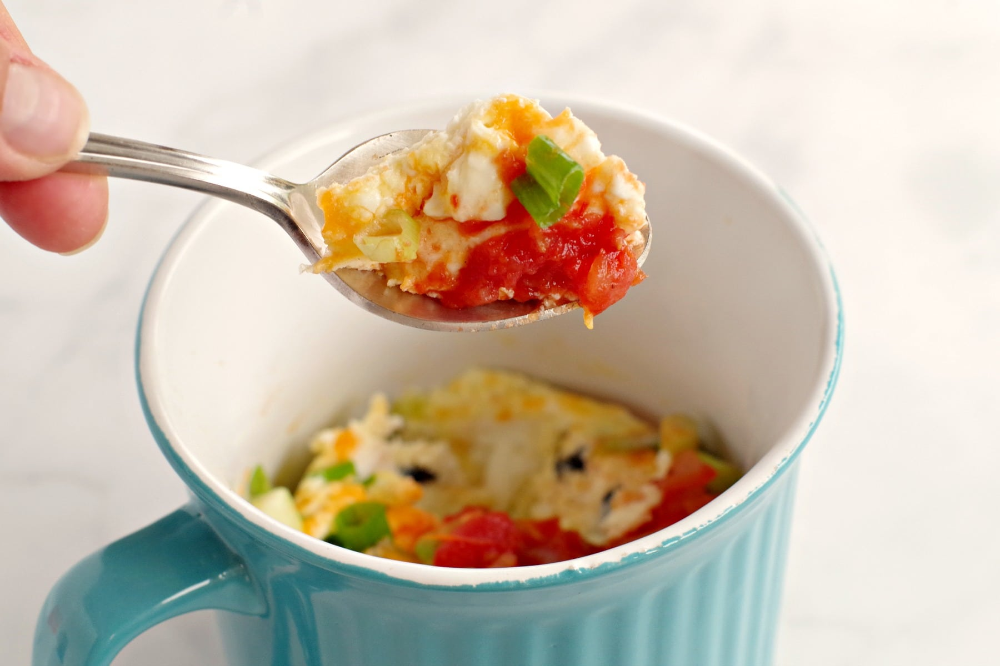
microwave mug omelette
This Microwave Omelette in a Mug is a quick and easy breakfast that's perfect for busy mornings!
click here
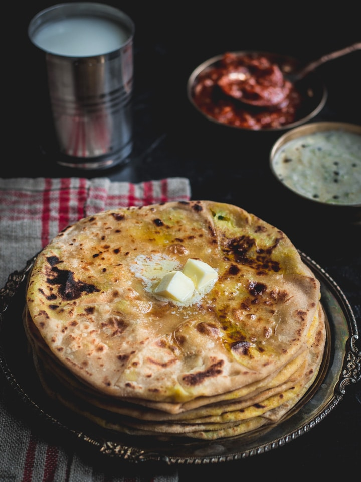
Aloo Paratha
Aloo Paratha – This potato filled Indian flatbread is the perfect way to start your day right. Pack it for lunch or savor it for breakfast!
click here

Mysore Masala Dosa
Mysore masala dosa, the most famous indian crepe with red Chutney and the potato filling inside! Healthy breakfast.
click here
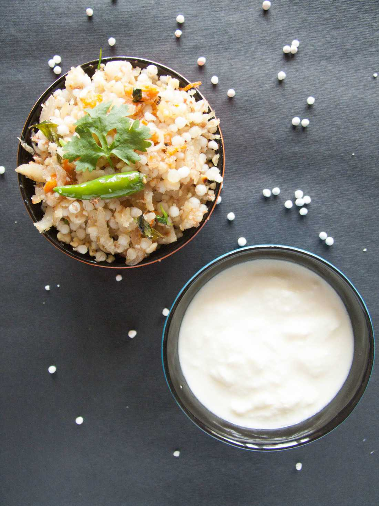
Sabudana Khichdi
Sabudane ki Khichdi is a healthy fasting recipe. This can also be prepared for breakfast or snacks on normal days.
click here
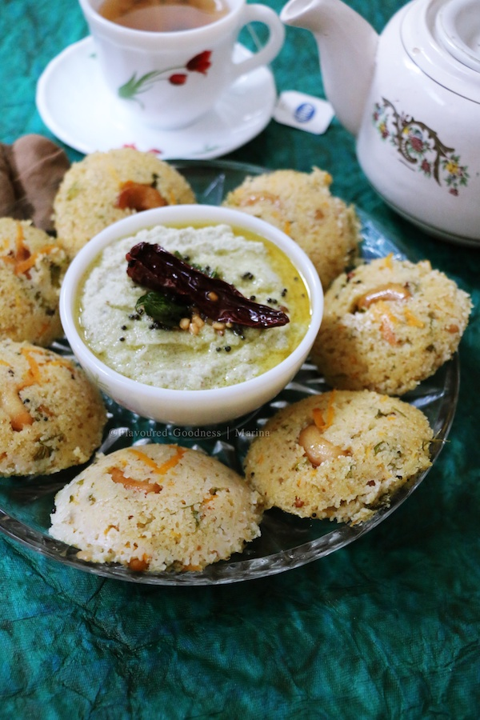
Rava Idli
Rava Idli is an instant South Indian breakfast recipe. Requires no grinding, no fermentation unlike the regular idlis.
click here
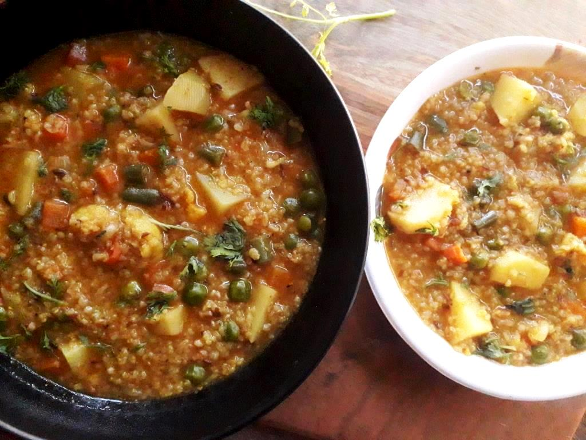
daliya khichdi
Healthy protein fiber rich breakfast with cracked wheat and all nutritious veggies cooked together in one pot.
click here
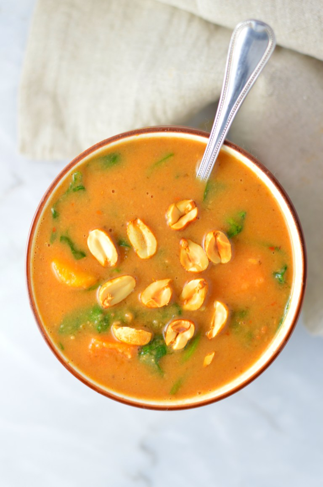
cashew vanilla granola
Easy Cashew Vanilla Granola recipe. Made with oats, cashews, raisins, coconut oil and other pantry staples, this makes a great breakfast
click here
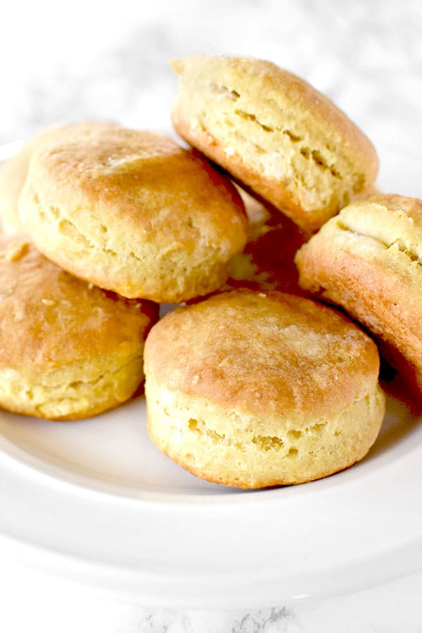
dairy free biscuits
These Dairy Free Biscuits are made with oil instead of butter and without milk. Still, they are flaky, soft, and crumbly on the inside!
click here
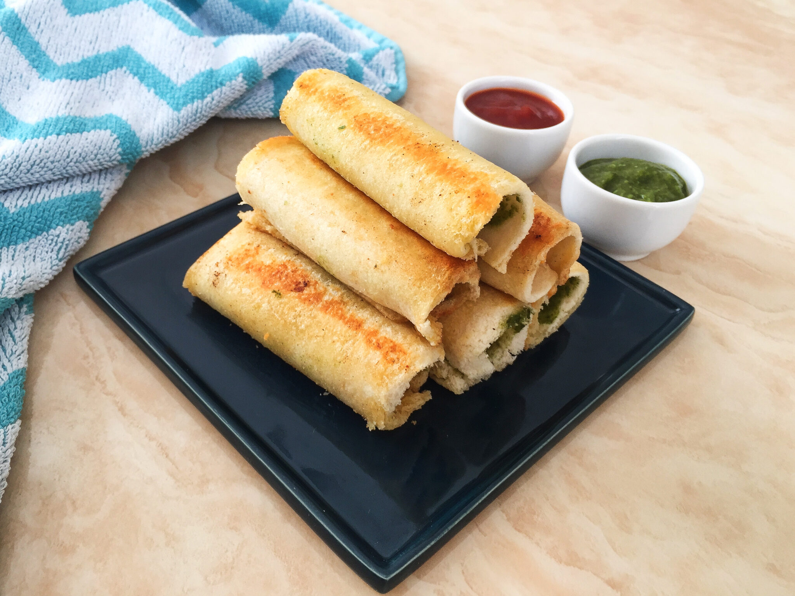
paneer bread rolls
Paneer bread rolls are tasty spicy tea-time snacks made with cottage cheese and bread.
click here
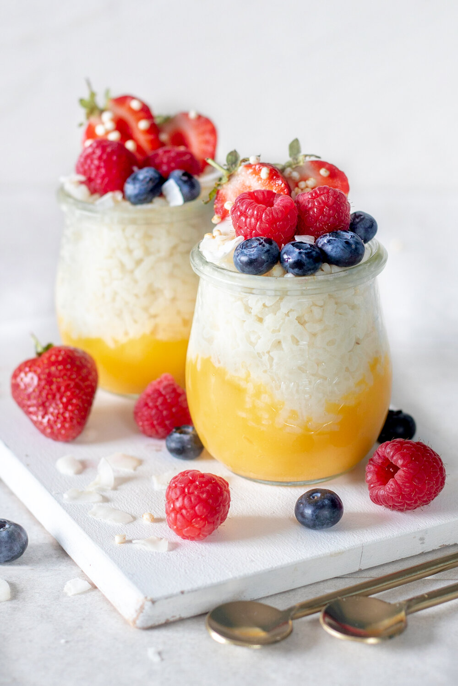
mango rice pudding
A light, sweet, and summery breakfast or dessert option. This is the rice pudding recipe you will become addicted!!
click here
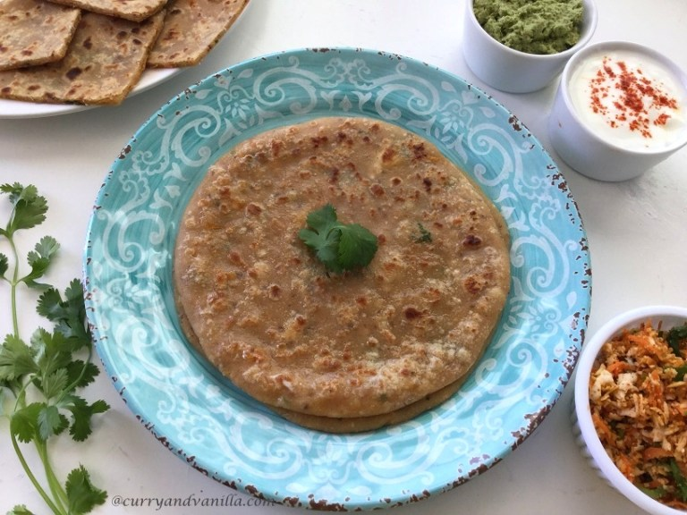
paneer cheese paratha
Indian whole wheat flat bread stuffed with a spicy, tangy mixture of paneer, cheese, carrots and spices.
click here
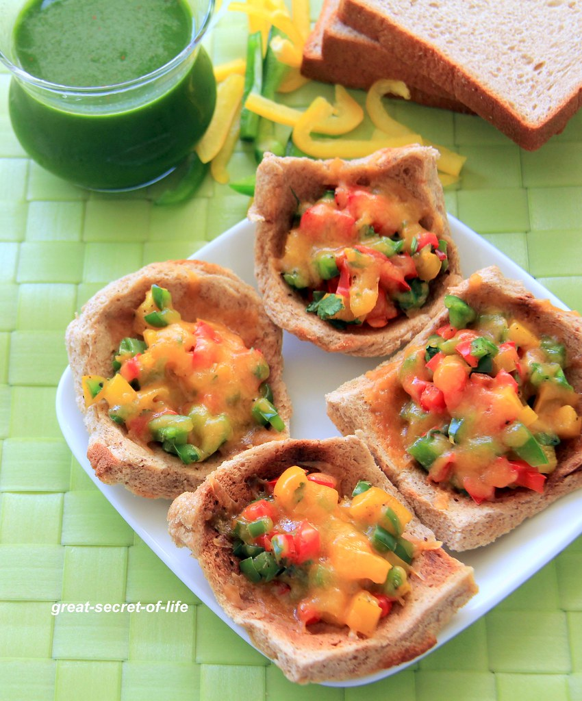
bread cup pizza
Very simple after school snack with Bread, Capsicums and cheese.. Bread cup.
click here
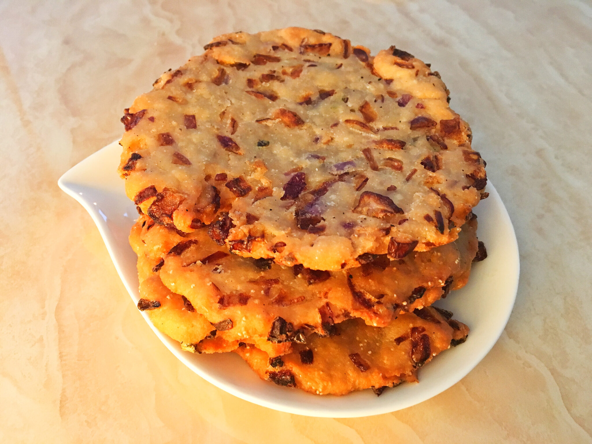
MADDUR VADA
Maddur vada is famous savoury fritters from Karnataka made with rice flour and onions.
click here
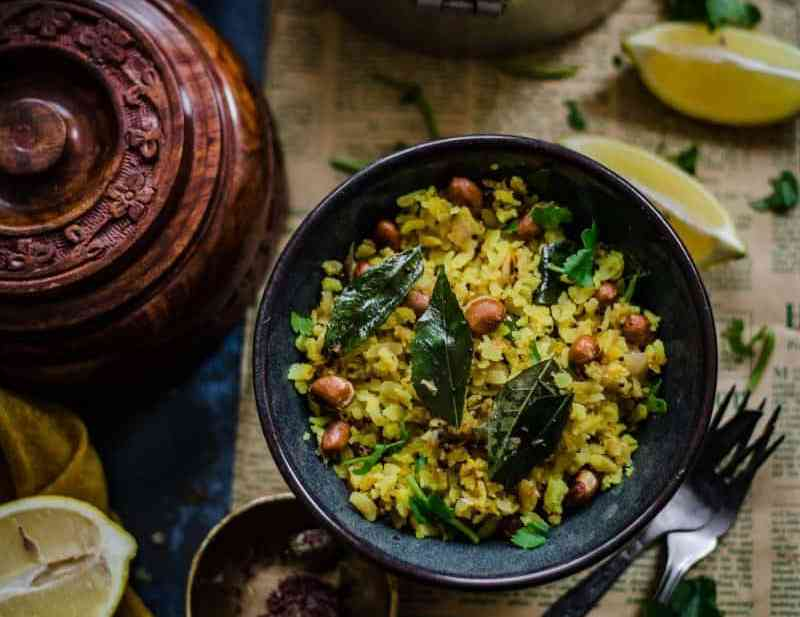
poha
Poha (flattened rice) is a wholesome and delicious Indian Breakfast recipe hailing from Maharashtra.
click here
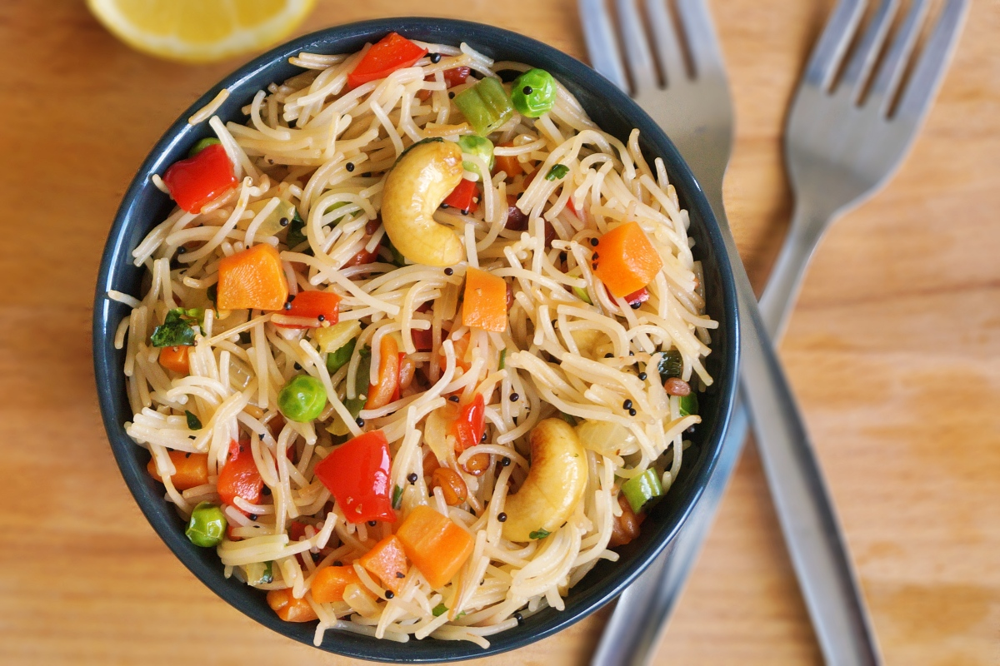
vermicelli upma
Vermicelli upma is the perfect breakfast recipe to energize your body for the entire day.
click here
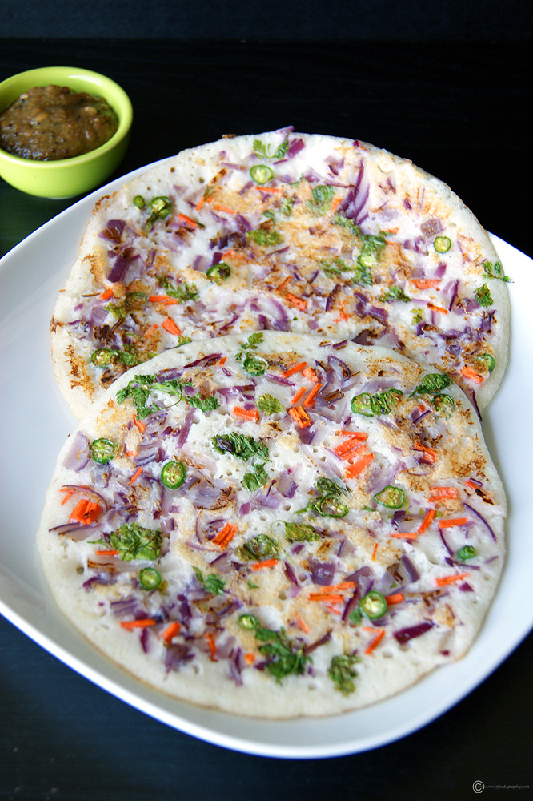
onion uttapam
Onion Uttapam is a variation of dosa, which is slightly thick like a pancake and topped with a spread of onion and veggies like a pizza.
click here